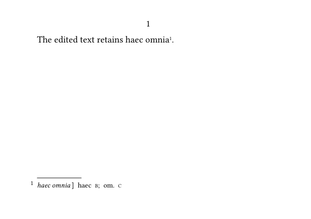
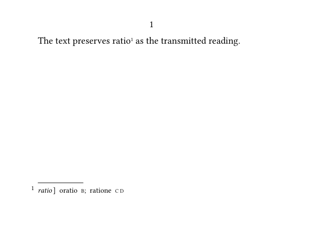
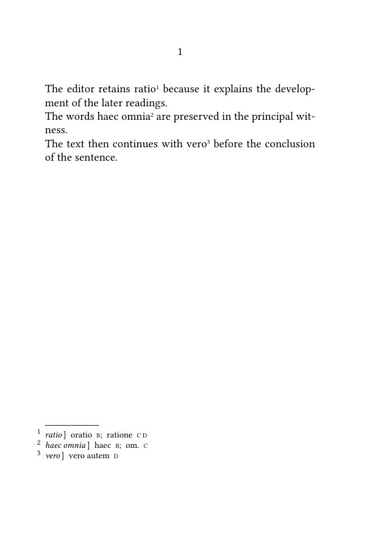
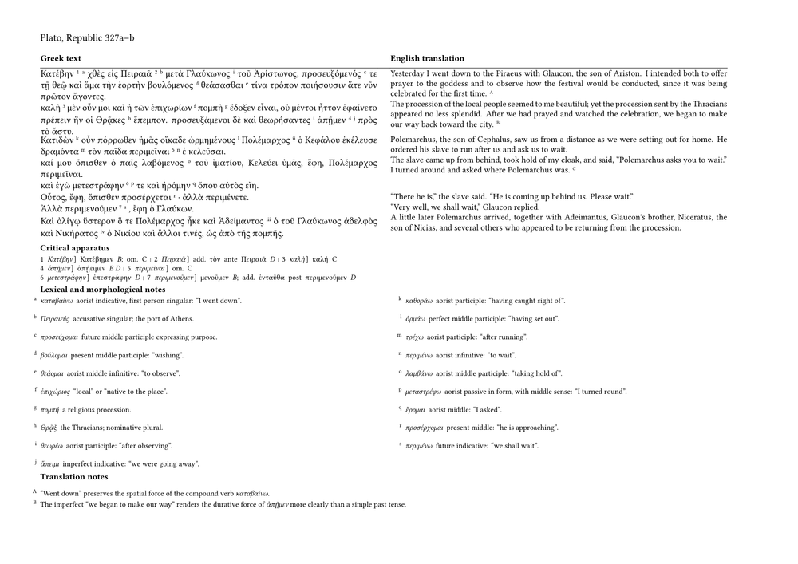

This page has recently been revised and reorganized.
Further corrections, additions, and improvements are welcome. Please feel free to edit or modify this page to improve it.
Guide 6 of 6 — Typesetting a TEI critical apparatus with ConTeXt
Previous: Processing TEI critical apparatus data with Lua · Collection overview · Glossary
Contents
- 1 1. From six guides to the scholarly page
- 2 2. Working contract inherited from Guide 5
- 3 3. From validated records to typographical structures
- 4 4. Typesetting a simple apparatus entry
- 5 5. Typesetting several apparatus entries
- 6 6. Typesetting several readings in one apparatus entry
- 7 7. Generating apparatus entries from Lua
-
8
8. Typesetting several registered apparatus entries
- 8.1 8.1. Building a registry of entries
- 8.2 8.2. Reusing the same renderer
- 8.3 8.3. Complete example with several notes
- 8.4 8.4. Why identifiers should remain stable
- 8.5 8.5. Avoiding identifiers derived from lemmas
- 8.6 8.6. Keeping entry order separate from registry order
- 8.7 8.7. Registering entries incrementally
- 8.8 8.8. The registry as an intermediate editorial layer
- 9 9. From Guide 5 records to Guide 6 typography
- 10 10. Adapting the architecture to the size of the edition
-
11
11. A multilingual scholarly example
- 11.1 11.1. The three textual levels
- 11.2 11.2. An abbreviated TEI representation
- 11.3 11.3. Normalised Lua records
- 11.4 11.4. Witness declarations
- 11.5 11.5. Defining several annotation layers in ConTeXt
- 11.6 11.6. ConTeXt commands for the apparatus
- 11.7 11.7. A complete multilingual minimal working example
- 11.8 11.8. Expected critical apparatus
- 11.9 11.9. Several levels of lemmatisation
- 11.10 11.10. Why the annotation layers remain separate
- 11.11 11.11. The role of Lua in the multilingual example
- 11.12 11.12. The role of ConTeXt in the multilingual example
- 11.13 11.13. Changing the apparatus language
- 11.14 11.14. Changing the parallel layout
- 11.15 11.15. What the first multilingual example establishes
-
12
12. A substantial multilingual edition page
- 12.1 12.1. What the example contains
- 12.2 12.2. The edited passage
- 12.3 12.3. Complete scholarly working example
- 12.4 12.4. Reading the resulting page
- 12.5 12.5. Abundant lemmatisation without overloading the text columns
- 12.6 12.6. Paragraph alignment rather than mechanical line alignment
- 12.7 12.7. The typographical load is deliberately substantial
- 12.8 12.8. What the example demonstrates about ConTeXt
- 13 13. What the six-guide series has established
- 14 14. Related pages and further reading
How to read this guide
The detailed table of contents is complemented by the following map. The guide moves from the stable hand-off established in Guide 5 towards increasingly demanding typographical situations:
PART I §§1–3 validated editorial data
↓
typographical structures
PART II §§4–8 apparatus entry
↓
several readings
↓
Lua renderer
↓
apparatus registry
PART III §§9–10 stable hand-off
↓
proportionate project architecture
PART IV §§11–12 multilingual composition
↓
several annotation layers
↓
substantial scholarly page
PART V §13 synthesis of the six-guide workflow
PART VI §14 related pages and further reading
Quick entry points.
- For the boundary between Guide 5 and Guide 6 , begin with §§1–3.
- To build a critical apparatus from prepared Lua records , begin with §§4–8.
- For a larger or collaborative edition architecture , see §§9–10.
- For parallel text, translation, and several annotation layers , go to §11.
- For the complete high-density scholarly-page test , go directly to §12.
1. From six guides to the scholarly page
The preceding guides have progressively constructed one scholarly workflow.
GUIDE 1
TEI document structure
│
▼
GUIDE 2
witness identities
│
▼
GUIDE 3
basic textual relations
│
▼
GUIDE 4
complex textual relations
│
▼
GUIDE 5
normalise + resolve + validate
│
▼
GUIDE 6
TYPOGRAPHICAL COMPOSITION ← YOU ARE HERE
The object received by this guide is therefore not raw XML. It is a set of editorial records whose meaning and internal consistency have already been established.
The final part of the workflow is:
SCHOLARLY EVIDENCE
│
▼
TEI
│
Guides 1–4
│
▼
encoded relations
│
▼
Lua
│
Guide 5
│
normalize ─ resolve ─ validate
│
▼
ACCEPTED RECORDS
│
│ Guide 6
▼
ConTeXt
│
+-------------+-------------+
│ │ │
▼ ▼ ▼
main text apparatuses notes
│ │ │
+-------------+-------------+
│
▼
page architecture
│
▼
TeX
│
▼
lines + pages + breaks
Guiding principle.
TEI records the scholarly evidence. Lua establishes a controlled editorial interpretation of the encoded relationships. ConTeXt gives those relationships a visible typographical form, and TeX performs the final line and page building.
This guide therefore asks a new question:
not: What does this TEI structure mean? but: How should validated editorial knowledge be composed on the page?
The examples begin with one apparatus record, then add readings, witnesses, registered entries, note layers, parallel texts, translation, and bibliography. The final scholarly page is thus built by accumulation rather than introduced as a new and unrelated mechanism.
2. Working contract inherited from Guide 5
Guide 5 has already produced accepted records with predictable fields. A typical record may be understood as:
VALIDATED LUA RECORD
app-001
├── valid: true
│
├── lemma
│ ├── text: λόγος
│ └── witnesses: A
│
└── readings
└── reading 1
├── text: λέξις
├── witnesses: B C
└── operation: reading
At this point, ConTeXt does not need to ask:
Does witness B exist? Is #C a valid reference? Does an empty reading mean omission? Should a malformed record be accepted?
Those questions belong to the processing layer.
ConTeXt now asks:
WHAT SHOULD BE VISIBLE?
│
+----------+----------+
│ │ │
▼ ▼ ▼
lemma reading sigla
│ │ │
+----------+----------+
│
▼
apparatus entry
Where are we?
The scholarly meaning of the records is already explicit. Guide 6 begins at the stable boundary between validated editorial data and typographical composition.
Technical note.
Some complete MWEs remain self-contained and may therefore repeat a small amount of processing code. Those fragments support compilation of the example; they do not reopen the processing model explained in Guide 5.
3. From validated records to typographical structures
The transition can be pictured before any formatting code is introduced:
validated record
│
▼
select visible functions
│
├── lemma
├── reading
└── witness sigla
│
▼
semantic ConTeXt commands
│
▼
typographical realization
Semantic structure does not determine page form.
The editorial content is stable; its typographical realization may change with the edition, language, page size, or publisher's conventions.
A validated Lua record is an editorial representation, not a visual design.
For example:
{
id = "app-001",
valid = true,
lemma = {
text = "λόγος",
witnesses = { "A" },
},
readings = {
{
operation = "reading",
text = "λέξις",
witnesses = { "B", "C" },
},
},
}
This record establishes several facts:
- the apparatus entry has a stable identifier;
-
its lemma is
λόγος; -
witness
Asupports that lemma; -
the variant reading is
λέξις; -
witnesses
BandCsupport the variant; - the record has passed validation.
It does not establish how these facts should appear on the page.
The same record might be composed as:
λόγος A] λέξις B C
or:
λόγος] λέξις B C; A
or within a more explicitly structured entry:
λόγος A
λέξις B C
The editorial content is stable. Its visual realization may vary according to the conventions and purposes of the edition.
3.1. Receiving prepared Lua records
In the examples that follow, ConTeXt receives Lua tables whose fields have predictable meanings.
A reading record may contain:
{
operation = "reading",
text = "λέξις",
witnesses = { "B", "C" },
witnesses = { ... },
valid = true,
}
ConTeXt can use these fields without returning to the XML source.
It can request:
record.lemma.text
to obtain the lemma, or:
record.readings[1].witnesses
to obtain the resolved witness records associated with the first reading.
This does not mean that ConTeXt merely prints every field mechanically.
The typesetting layer selects, orders, abbreviates, and differentiates the available information according to the design of the apparatus.
For example, a witness record may contain a full description:
{
id = "A",
siglum = "A",
type = "manuscript",
description = "Paris, Bibliothèque nationale de France, grec 1807",
}
The apparatus will normally print only the siglum:
A
The full description may instead be used in a list of witnesses, a tooltip, a reference section, or an editorial report.
The intermediate record therefore supplies structured possibilities. ConTeXt decides which of them belong in the current typographical context.
3.2. Editorial meaning and typographical realization
A useful distinction must be maintained between editorial categories and their visual expression.
The Lua record may state:
kind = "omission"
This category identifies the meaning of the reading.
ConTeXt may render it as:
om.
or:
omitted
or:
—
or by another convention adopted for the edition.
Likewise, a witness of type:
type = "printed-edition"
may be displayed differently from a manuscript witness, but the Lua record does not need to prescribe the font, colour, spacing, or punctuation used for that distinction.
The typographical realization may depend on:
- the language of the apparatus;
- the conventions of the scholarly field;
- the available horizontal space;
- the number of apparatus layers;
- the intended print format;
- the requirements of screen publication;
- the design adopted by a publisher or series.
ConTeXt should therefore transform editorial categories into typography through named and reusable formatting commands.
The same data can then receive a different appearance without being reprocessed.
3.3. Keeping processing and presentation separate
The separation between Lua processing and ConTeXt presentation is not an absolute technical boundary.
ConTeXt and Lua operate within the same system, and a practical implementation may allow them to communicate closely.
The distinction is nevertheless important because the two layers answer different questions.
Lua asks:
- What does this record contain?
- Which references have been resolved?
- Which category describes this reading?
- Is the record valid?
- Which witnesses belong to it?
ConTeXt asks:
- Which part should be printed?
- In what order should the parts appear?
- Which punctuation should separate them?
- Which typographical style should identify each function?
- Where should the apparatus be placed?
- How should the entry behave at a line or page break?
When these questions are mixed inside a single macro, the resulting code becomes difficult to inspect and difficult to adapt.
A macro responsible for printing a reading should not also have to parse a TEI attribute, remove reference markers, detect unknown witnesses, and determine whether an empty string represents an omission.
Those operations belong to the processing layer developed in Guide 5.
The typesetting layer can therefore begin from a simpler contract:
accepted editorial record
↓
typographical formatting functions
↓
apparatus entry
This separation will become increasingly important when several apparatus layers, parallel texts, translations, and bibliographical notes are composed on the same page.
The next section begins with the smallest useful typographical unit: one validated apparatus entry.
4. Typesetting a simple apparatus entry
The first cumulative step is deliberately small:
DATA
lemma = ratio
reading = oratio
witnesses = B
│
▼
SEMANTIC ConTeXt INTERFACE
\ApparatusEntry
├── \ApparatusLemma
├── \ApparatusReading
└── \ApparatusWitness
│
▼
TYPOGRAPHICAL RESULT
ratio] oratio B
First typographical stage.
One validated record can now become one readable apparatus entry without returning to the TEI source.
Once Lua has collected and validated the critical data, ConTeXt does not need
to interpret the original TEI elements. It only needs the typographical
components of each apparatus entry.
A simple entry may be represented by three values:
| Component | Value | Typographical role |
|---|---|---|
| lemma | ratio
|
the reading printed in the edited text |
| reading | oratio
|
the alternative reading recorded by the apparatus |
| witnesses | B
|
the witness supporting that reading |
These values correspond to a TEI structure such as:
<app> <lem>ratio</lem> <rdg wit="#B">oratio</rdg> </app>
At the typesetting stage, however, ConTeXt does not need to reconstruct this XML hierarchy. Lua can pass the three prepared values to a small ConTeXt interface:
\ApparatusEntry
{ratio}
{oratio}
{B}
The command can then assign a distinct typographical treatment to the lemma, the alternative reading, and the witness siglum.
-
\mainlanguage[en] \setuppapersize[A7,landscape] \setupbodyfont [libertinus,9pt] \definenote [apparatus] \setupnotation [apparatus] [way=bypage] \define[1]\ApparatusLemma {{\it #1}} \define[1]\ApparatusReading {#1} \define[1]\ApparatusWitness {{\tfxx #1}} \define[3]\ApparatusEntry {\ApparatusLemma{#1}% \thinspace]\enspace \ApparatusReading{#2}% \enspace \ApparatusWitness{#3}} \starttext The manuscript tradition preserves ratio\apparatus{\ApparatusEntry {ratio} {oratio} {B}} as the more difficult reading. \stoptext
-

The resulting note has the conventional compact form:
ratio] oratio B
The closing bracket separates the lemma from the information that follows. The alternative reading is then followed by the siglum of the witness that supports it.
The definitions deliberately keep the three components separate:
\ApparatusLemma \ApparatusReading \ApparatusWitness
This separation is more important than the particular formatting used in the example. An editor may later change the treatment of lemmas, readings, or sigla without modifying the Lua records and without rewriting every apparatus entry.
For example, witness sigla could be made italic:
\define[1]\ApparatusWitness
{{\it #1}}
or the lemma could be printed in roman type rather than italics:
\define[1]\ApparatusLemma
{#1}
The data remain unchanged. Only their typographical interpretation changes.
4.1. Passing a prepared Lua record
In the processing stage described in the previous section, Lua may have produced a normalised record resembling the following:
{
lemma = "ratio",
readings = {
{
text = "oratio",
witnesses = { "B" }
}
}
}
For this simple case, the record can be reduced to the three arguments expected
by \ApparatusEntry:
lemma → ratio reading → oratio witnesses → B
The significant boundary is therefore not between XML and printed text directly, but between two different representations:
validated critical record
↓
typographical arguments
↓
ConTeXt apparatus entry
Lua is responsible for ensuring that the witness reference is valid and that the record contains the required fields. ConTeXt is responsible for placing the note and giving its components a consistent visual form.
This first example contains only one alternative reading supported by one witness. The next section extends the same interface to several apparatus entries and to records containing more than one reading.
5. Typesetting several apparatus entries
The interface from the preceding section is reused rather than replaced:
one semantic interface
│
├── app-001
├── app-002
└── app-003
│
▼
several apparatus notes
Temporary simplification.
The small hand-written examples may pass strings such as om. or
add. directly to the typesetting command. In the complete workflow,
editorial categories should remain semantic data and ConTeXt should supply their
visible wording.
A critical apparatus normally contains more than one note. Once the
typographical interface has been defined, the same command can be reused
throughout the edited text.
The following example contains three apparatus entries:
- one alternative reading;
- one omission;
- one additional word.
-
\mainlanguage[en] \setuppapersize[A7,landscape] \setupbodyfont [libertinus,9pt] \definenote [apparatus] \setupnotation [apparatus] [way=bypage] \define[1]\ApparatusLemma {{\it #1}} \define[1]\ApparatusReading {#1} \define[1]\ApparatusWitness {{\tfxx #1}} \define[3]\ApparatusEntry {\ApparatusLemma{#1}% \thinspace]\enspace \ApparatusReading{#2}% \enspace \ApparatusWitness{#3}} \starttext The manuscript tradition preserves ratio\apparatus{\ApparatusEntry {ratio} {oratio} {B}} as the more difficult reading. The words haec omnia\apparatus{\ApparatusEntry {haec omnia} {om.} {C}} are absent from one witness. Another manuscript adds autem\apparatus{\ApparatusEntry {autem} {add. post vero} {D}} after the preceding word. \stoptext
-

The three notes are constructed by repeated calls to the same command:
\ApparatusEntry
{lemma}
{reading}
{witnesses}
The typographical structure is therefore stable even though the editorial meaning of the entries differs.
The first entry records a substitution:
ratio] oratio B
The second records an omission:
haec omnia] om. C
The third records an addition:
autem] add. post vero D
At this stage, abbreviations such as om., add.,
and post are passed to ConTeXt as ordinary textual values.
ConTeXt does not need to determine their editorial meaning. It only gives
them their assigned typographical form.
5.1. Keeping editorial data distinct from running text
The word or passage printed in the main text is not necessarily identical to the complete lemma displayed in the apparatus.
For example, the running text may contain:
haec omnia
while the apparatus receives the same passage as an explicit argument:
\apparatus{\ApparatusEntry
{haec omnia}
{om.}
{C}}
This repetition is acceptable in a small hand-written example, but it becomes fragile in a larger edition. A correction made in the running text may fail to be reproduced in the apparatus entry.
Structured data make it possible to avoid this problem. Lua may store the lemma, reading, and witness references once, then pass the validated values to ConTeXt when the note is typeset.
The processing sequence remains:
TEI apparatus element
↓
Lua record
↓
validation and normalisation
↓
ConTeXt apparatus entry
The ConTeXt interface remains small because decisions about the structure and validity of the critical data have already been made before typesetting.
5.2. Several witnesses for one reading
A reading may be supported by more than one witness. For a simple typographical interface, Lua can prepare the witness list as a single string:
B D
The resulting ConTeXt call remains unchanged:
\ApparatusEntry
{ratio}
{oratio}
{B D}
For example:
-
\mainlanguage[en] \setuppapersize[A7,landscape] \setupbodyfont [libertinus,9pt] \definenote [apparatus] \define[1]\ApparatusLemma {{\it #1}} \define[1]\ApparatusReading {#1} \define[1]\ApparatusWitness {{\tfxx #1}} \define[3]\ApparatusEntry {\ApparatusLemma{#1}% \thinspace]\enspace \ApparatusReading{#2}% \enspace \ApparatusWitness{#3}} \starttext The text reads ratio\apparatus{\ApparatusEntry {ratio} {oratio} {B D}} in the principal branch of the tradition. \stoptext
-

The note is printed as:
ratio] oratio B D
At the ConTeXt level, B D is only the formatted witness field.
Lua may have constructed it from a list such as:
witnesses = { "B", "D" }
This distinction will become important when witness lists must be sorted, grouped, checked, or formatted according to their type.
The next section introduces entries containing more than one alternative reading.
6. Typesetting several readings in one apparatus entry
The same record can now grow internally while the outer apparatus entry remains stable:
record
├── lemma: ratio
└── readings
├── oratio
│ └── B
└── ratione
└── C D
│
▼
\ApparatusEntry
├── lemma
└── readings
├── \ApparatusReading
├── separator
└── \ApparatusReading
│
▼
ratio] oratio B; ratione C D
One entry, several readings.
The lemma is printed once. The list of readings may grow without changing the conceptual role of the outer apparatus entry.
A single lemma may be associated with several alternative readings. In TEI,
these readings normally belong to the same <app> element:
<app> <lem>ratio</lem> <rdg wit="#B">oratio</rdg> <rdg wit="#C #D">ratione</rdg> </app>
After validation, Lua may represent the same information as one record containing several readings:
{
lemma = "ratio",
readings = {
{
text = "oratio",
witnesses = { "B" }
},
{
text = "ratione",
witnesses = { "C", "D" }
}
}
}
The important point is that this remains one apparatus entry. The lemma is printed once, followed by the readings that belong to it.
6.1. Separating the readings typographically
A simple interface can define one command for the complete entry and another for each individual reading:
-
\mainlanguage[en] \setuppapersize[A7,landscape] \setupbodyfont [libertinus,9pt] \definenote [apparatus] \setupnotation [apparatus] [way=bypage] \define[1]\ApparatusLemma {{\it #1}} \define[1]\ApparatusReadingText {#1} \define[1]\ApparatusWitness {{\tfxx #1}} \define[2]\ApparatusReading {\ApparatusReadingText{#1}% \enspace \ApparatusWitness{#2}} \define\ApparatusReadingSeparator {;\enspace} \define[2]\ApparatusEntry {\ApparatusLemma{#1}% \thinspace]\enspace #2} \starttext The text preserves ratio\apparatus{\ApparatusEntry {ratio} {\ApparatusReading {oratio} {B}% \ApparatusReadingSeparator \ApparatusReading {ratione} {C D}}} as the transmitted reading. \stoptext
-

The resulting note has the form:
ratio] oratio B; ratione C D
The lemma is printed only once. Each reading is followed by its supporting witnesses, and the readings are separated by a semicolon.
The structure of the ConTeXt call reflects the logical organisation of the entry:
\ApparatusEntry
{lemma}
{
\ApparatusReading
{first reading}
{witnesses}
\ApparatusReadingSeparator
\ApparatusReading
{second reading}
{witnesses}
}
This is more flexible than placing all the information in one undivided string. The editor may later change:
- the formatting of the lemma;
- the formatting of each reading;
- the formatting of witness sigla;
- the separator between readings.
The critical data themselves do not need to be changed.
6.2. Why the second argument contains complete readings
The command \ApparatusEntry now takes two arguments rather than
three:
\ApparatusEntry
{lemma}
{formatted readings}
This change is necessary because an entry may contain any number of readings. A fixed interface such as
\ApparatusEntry
{lemma}
{reading}
{witnesses}
can represent only one reading without adding more and more arguments.
By contrast, the second argument of the new interface may contain one reading, two readings, or a longer sequence:
\ApparatusEntry
{ratio}
{\ApparatusReading
{oratio}
{B}}
or:
\ApparatusEntry
{ratio}
{\ApparatusReading
{oratio}
{B}%
\ApparatusReadingSeparator
\ApparatusReading
{ratione}
{C D}}
The outer command controls the entry as a whole. The inner commands control the individual readings.
6.3. Generating the reading sequence with Lua
Lua can traverse the list of readings and emit the corresponding ConTeXt commands.
The logical operation is:
for each reading:
print its text
print its witnesses
insert a separator unless it is the final reading
For the record:
readings = {
{
text = "oratio",
witnesses = { "B" }
},
{
text = "ratione",
witnesses = { "C", "D" }
}
}
Lua may generate:
\ApparatusReading
{oratio}
{B}
\ApparatusReadingSeparator
\ApparatusReading
{ratione}
{C D}
ConTeXt then applies the typographical definitions without needing to know how many readings were present in the original TEI element.
This preserves a clear division of responsibility:
| Stage | Responsibility |
|---|---|
| TEI | records the lemma, readings, and witness references |
| Lua | validates the record and constructs the sequence of readings |
| ConTeXt | formats and places the resulting apparatus entry |
6.4. Omissions among several readings
An omission may occur beside one or more positive readings:
<app> <lem>haec omnia</lem> <rdg wit="#B">haec</rdg> <rdg wit="#C">om.</rdg> </app>
The same ConTeXt interface can typeset this entry:
-
\mainlanguage[en] \setuppapersize[A7,landscape] \setupbodyfont [libertinus,9pt] \definenote [apparatus] \define[1]\ApparatusLemma {{\it #1}} \define[1]\ApparatusReadingText {#1} \define[1]\ApparatusWitness {{\tfxx #1}} \define[2]\ApparatusReading {\ApparatusReadingText{#1}% \enspace \ApparatusWitness{#2}} \define\ApparatusReadingSeparator {;\enspace} \define[2]\ApparatusEntry {\ApparatusLemma{#1}% \thinspace]\enspace #2} \starttext The edited text retains haec omnia\apparatus{\ApparatusEntry {haec omnia} {\ApparatusReading {haec} {B}% \ApparatusReadingSeparator \ApparatusReading {om.} {C}}}. \stoptext
-

The note is printed as:
haec omnia] haec B; om. C
For ConTeXt, om. is simply the text of one reading. Lua may,
however, have produced it from a structured indication that the witness omits
the lemma.
The next section will connect this typographical interface directly to Lua, so that the apparatus entry is generated from a validated record rather than written manually.
7. Generating apparatus entries from Lua
The next step inserts a renderer between the validated record and the semantic ConTeXt interface:
VALIDATED RECORD
│
▼
Lua renderer
│
├── traverses readings
├── prepares witness lists
└── calls semantic commands
│
▼
ConTeXt commands
│
├── typography
├── punctuation
├── spacing
└── placement
│
▼
APPARATUS
Do not move typography back into Lua.
Lua may choose which semantic ConTeXt command to call. The visual form of that function should remain in the ConTeXt layer.
The preceding examples wrote the ConTeXt apparatus commands manually. The
next step is to generate those commands directly from a validated Lua record.
This does not mean that Lua takes over the typographical work. Lua selects, organises, and passes the data. The visual form of the apparatus remains defined by ConTeXt commands.
7.1. A validated apparatus record
Consider the following Lua record:
local entry = {
lemma = "ratio",
readings = {
{
text = "oratio",
witnesses = { "B" }
},
{
text = "ratione",
witnesses = { "C", "D" }
}
}
}
The record contains one lemma and two alternative readings. Each reading has its own list of supporting witnesses.
At this stage, the record is assumed to have already passed the structural checks introduced in the previous guide:
- the lemma is present;
- at least one reading is present;
- every reading contains a text value;
- every witness identifier is valid.
The renderer therefore does not need to repair or reinterpret the data. It can concentrate on passing the prepared values to ConTeXt.
7.2. Defining a Lua renderer
The following Lua function traverses the readings and emits the ConTeXt commands defined in the preceding section:
local function typesetapparatusentry(entry)
context.ApparatusEntry(
entry.lemma,
function()
for index, reading in ipairs(entry.readings) do
context.ApparatusReading(
reading.text,
table.concat(reading.witnesses, " ")
)
if index < #entry.readings then
context.ApparatusReadingSeparator()
end
end
end
)
end
The operation may be read in three stages:
entry.lemma
→ first argument of \ApparatusEntry
reading.text
→ first argument of \ApparatusReading
reading.witnesses
→ joined and passed as the witness field
The expression
table.concat(reading.witnesses, " ")
turns a Lua list such as
{ "C", "D" }
into the string:
C D
The separator is emitted only between readings:
if index < #entry.readings then context.ApparatusReadingSeparator() end
This prevents an unnecessary semicolon from appearing after the final reading.
7.3. Complete minimal example
The following example combines:
- the ConTeXt definitions controlling the visual form;
- a structured Lua apparatus record;
- a Lua renderer;
- a call from the edited text.
-
\mainlanguage[en] \setuppapersize[A7,landscape] \setupbodyfont [libertinus,9pt] \definenote [apparatus] \setupnotation [apparatus] [way=bypage] \define[1]\ApparatusLemma {{\it #1}} \define[1]\ApparatusReadingText {#1} \define[1]\ApparatusWitness {{\tfxx #1}} \define[2]\ApparatusReading {\ApparatusReadingText{#1}% \enspace \ApparatusWitness{#2}} \define\ApparatusReadingSeparator {;\enspace} \define[2]\ApparatusEntry {\ApparatusLemma{#1}% \thinspace]\enspace #2} \startluacode local apparatusentries = { ratio = { lemma = "ratio", readings = { { text = "oratio", witnesses = { "B" } }, { text = "ratione", witnesses = { "C", "D" } } } } } local function typesetapparatusentry(entry) context.ApparatusEntry( entry.lemma, function() for index, reading in ipairs(entry.readings) do context.ApparatusReading( reading.text, table.concat(reading.witnesses, " ") ) if index < #entry.readings then context.ApparatusReadingSeparator() end end end ) end criticaledition = criticaledition or {} function criticaledition.typesetapparatus(id) local entry = apparatusentries[id] if entry then typesetapparatusentry(entry) end end \stopluacode \define[1]\TypesetApparatus {\ctxlua{ criticaledition.typesetapparatus( "\luaescapestring{#1}" ) }} \starttext The text preserves ratio\apparatus{\TypesetApparatus{ratio}} as the transmitted reading. \stoptext
-

The resulting note is:
ratio] oratio B; ratione C D
The running text contains only the identifier of the prepared record:
\apparatus{\TypesetApparatus{ratio}}
The complete lemma, readings, and witness lists remain in the Lua data structure.
7.4. Looking up an entry by identifier
The example stores the record in a table indexed by the identifier
ratio:
local apparatusentries = {
ratio = {
lemma = "ratio",
readings = {
...
}
}
}
The command
\TypesetApparatus{ratio}
passes this identifier to Lua:
\define[1]\TypesetApparatus
{\ctxlua{
criticaledition.typesetapparatus(
"\luaescapestring{#1}"
)
}}
Lua then retrieves the corresponding record:
local entry = apparatusentries[id]
This lookup separates the location of the apparatus note from the full critical record.
The text contains a compact reference:
ratio\apparatus{\TypesetApparatus{ratio}}
while Lua retains the structured data:
lemma readings witnesses
In a larger workflow, the identifier need not be identical to the lemma. A neutral identifier may be preferable:
app-001 app-002 app-003
For example:
local apparatusentries = {
["app-001"] = {
lemma = "ratio",
readings = {
{
text = "oratio",
witnesses = { "B" }
}
}
}
}
The corresponding call would be:
ratio\apparatus{\TypesetApparatus{app-001}}
Neutral identifiers avoid problems when:
- the same lemma occurs more than once;
- a lemma contains spaces or punctuation;
- a lemma changes during editorial revision;
- several apparatus entries refer to identical words in different places.
7.5. Handling an unknown identifier
Even validated data may be called incorrectly from the ConTeXt source. A simple diagnostic can make an unknown identifier visible during compilation:
criticaledition = criticaledition or {}
function criticaledition.typesetapparatus(id)
local entry = apparatusentries[id]
if not entry then
report("unknown apparatus identifier: %s", id)
return
end
typesetapparatusentry(entry)
end
The reporter can be defined with:
local report =
logs.reporter("critical-edition", "apparatus")
The complete Lua fragment becomes:
local report =
logs.reporter("critical-edition", "apparatus")
criticaledition = criticaledition or {}
function criticaledition.typesetapparatus(id)
local entry = apparatusentries[id]
if not entry then
report("unknown apparatus identifier: %s", id)
return
end
typesetapparatusentry(entry)
end
A call such as
\TypesetApparatus{app-999}
will then produce a diagnostic message in the compilation log instead of silently generating an empty note.
This check does not replace validation of the apparatus records. It checks a different boundary: the connection between a ConTeXt call and the Lua registry.
7.6. Keeping the renderer independent of the data source
The renderer does not need to know whether the record was:
- written directly in Lua;
- extracted from a TEI document;
- imported from another structured format;
- constructed during an earlier processing stage.
It expects only a normalised record with the following shape:
{
lemma = "...",
readings = {
{
text = "...",
witnesses = { "...", "..." }
}
}
}
This normalised representation acts as an interface between the source data and the typesetting layer.
The complete processing sequence is now:
TEI source
↓
Lua extraction
↓
normalised apparatus record
↓
validation
↓
Lua renderer
↓
ConTeXt typographical commands
↓
printed apparatus entry
Each layer has a limited responsibility:
| Layer | Responsibility |
|---|---|
| TEI | records the scholarly structure and witness references |
| Lua extraction | reads the relevant XML elements and attributes |
| Lua record | provides a stable internal representation |
| Lua validation | checks the completeness and consistency of the data |
| Lua renderer | traverses the record and calls the appropriate ConTeXt commands |
| ConTeXt | controls the visual form and placement of the apparatus |
The renderer therefore forms a narrow bridge between structured critical data and typographical commands. It does not collapse the distinction between the two.
The next section will extend the registry to several apparatus records and will show how the same renderer can typeset entries at different points in the edited text.
8. Typesetting several registered apparatus entries
Several records now share the same renderer:
APPARATUS REGISTRY
app-001 ──► ratio
app-002 ──► haec omnia
app-003 ──► vero
│
▼
RUNNING TEXT
ratio ──► app-001
haec omnia ──► app-002
vero ──► app-003
│
▼
same renderer
│
▼
apparatus notes
The stable identifier belongs to the processing architecture. The printed order belongs to the textual context in which the entries are called.
A real edition normally contains many apparatus entries distributed throughout
the text. Once the renderer has been defined, the same Lua registry can store
all of them.
Each entry receives a stable identifier. ConTeXt uses that identifier to request the corresponding note, while Lua retains the complete scholarly record.
8.1. Building a registry of entries
The following registry contains three apparatus records:
local apparatusentries = {
["app-001"] = {
lemma = "ratio",
readings = {
{
text = "oratio",
witnesses = { "B" }
},
{
text = "ratione",
witnesses = { "C", "D" }
}
}
},
["app-002"] = {
lemma = "haec omnia",
readings = {
{
text = "haec",
witnesses = { "B" }
},
{
text = "om.",
witnesses = { "C" }
}
}
},
["app-003"] = {
lemma = "vero",
readings = {
{
text = "vero autem",
witnesses = { "D" }
}
}
}
}
The keys app-001, app-002, and
app-003 identify the records. They do not determine how the
entries are printed.
The first record contains two alternative readings:
ratio] oratio B; ratione C D
The second contains a positive reading and an omission:
haec omnia] haec B; om. C
The third records an addition within the transmitted reading:
vero] vero autem D
8.2. Reusing the same renderer
The renderer introduced in the preceding section does not need to be changed. It can typeset any record that follows the expected structure:
local function typesetapparatusentry(entry)
context.ApparatusEntry(
entry.lemma,
function()
for index, reading in ipairs(entry.readings) do
context.ApparatusReading(
reading.text,
table.concat(reading.witnesses, " ")
)
if index < #entry.readings then
context.ApparatusReadingSeparator()
end
end
end
)
end
The lookup function retrieves the requested record:
criticaledition = criticaledition or {}
function criticaledition.typesetapparatus(id)
local entry = apparatusentries[id]
if not entry then
report("unknown apparatus identifier: %s", id)
return
end
typesetapparatusentry(entry)
end
The renderer is generic because it does not contain the text of any particular lemma or reading. It operates only on the structure of the record.
8.3. Complete example with several notes
The following example places three apparatus entries at different points in the running text.
-
\mainlanguage[en] \setuppapersize[A6] \setupbodyfont [libertinus,9pt] \definenote [apparatus] \setupnotation [apparatus] [way=bypage] \define[1]\ApparatusLemma {{\it #1}} \define[1]\ApparatusReadingText {#1} \define[1]\ApparatusWitness {{\tfxx #1}} \define[2]\ApparatusReading {\ApparatusReadingText{#1}% \enspace \ApparatusWitness{#2}} \define\ApparatusReadingSeparator {;\enspace} \define[2]\ApparatusEntry {\ApparatusLemma{#1}% \thinspace]\enspace #2} \startluacode local report = logs.reporter("critical-edition", "apparatus") local apparatusentries = { ["app-001"] = { lemma = "ratio", readings = { { text = "oratio", witnesses = { "B" } }, { text = "ratione", witnesses = { "C", "D" } } } }, ["app-002"] = { lemma = "haec omnia", readings = { { text = "haec", witnesses = { "B" } }, { text = "om.", witnesses = { "C" } } } }, ["app-003"] = { lemma = "vero", readings = { { text = "vero autem", witnesses = { "D" } } } } } local function typesetapparatusentry(entry) context.ApparatusEntry( entry.lemma, function() for index, reading in ipairs(entry.readings) do context.ApparatusReading( reading.text, table.concat(reading.witnesses, " ") ) if index < #entry.readings then context.ApparatusReadingSeparator() end end end ) end criticaledition = criticaledition or {} function criticaledition.typesetapparatus(id) local entry = apparatusentries[id] if not entry then report("unknown apparatus identifier: %s", id) return end typesetapparatusentry(entry) end \stopluacode \define[1]\TypesetApparatus {\ctxlua{ criticaledition.typesetapparatus( "\luaescapestring{#1}" ) }} \starttext The editor retains ratio\apparatus{\TypesetApparatus{app-001}} because it explains the development of the later readings. The words haec omnia\apparatus{\TypesetApparatus{app-002}} are preserved in the principal witness. The text then continues with vero\apparatus{\TypesetApparatus{app-003}} before the conclusion of the sentence. \stoptext
-

The apparatus contains three independently generated notes:
ratio] oratio B; ratione C D haec omnia] haec B; om. C vero] vero autem D
Only the identifiers appear in the ConTeXt source:
\TypesetApparatus{app-001}
\TypesetApparatus{app-002}
\TypesetApparatus{app-003}
The scholarly content remains in the Lua registry.
8.4. Why identifiers should remain stable
An apparatus identifier is an internal reference. It should remain stable even when the wording of the lemma or readings changes during editorial revision.
Suppose the first record initially contains:
lemma = "ratio"
and is later corrected to:
lemma = "recta ratio"
The identifier may remain:
app-001
The call in the text therefore does not need to be rewritten:
\TypesetApparatus{app-001}
Stable identifiers are especially useful when:
- the same word occurs several times;
- the lemma changes during revision;
- entries are sorted or filtered;
- other records refer to the same apparatus entry;
- diagnostic reports identify entries by their internal key.
The identifier belongs to the processing architecture, not to the visible apparatus.
8.5. Avoiding identifiers derived from lemmas
Using the lemma itself as the registry key may appear convenient:
apparatusentries["ratio"] = {
...
}
This approach becomes unreliable when the same lemma occurs more than once:
ratio ... ratio
Both occurrences would require the same key even though they may have different readings and witnesses.
Keys derived from lemmas may also contain:
- spaces;
- punctuation;
- accented characters;
- ConTeXt commands;
- XML entities;
- text that later changes.
Neutral identifiers avoid these difficulties:
app-001 app-002 app-003
A more descriptive convention may also be used:
book1-line12-app1 book1-line18-app1 book2-line03-app2
The exact convention is less important than its consistency and stability.
8.6. Keeping entry order separate from registry order
Lua tables indexed by identifiers should not be treated as an ordered sequence. The order of the printed apparatus entries is determined by their position in the running text:
ratio\apparatus{\TypesetApparatus{app-001}}
haec omnia\apparatus{\TypesetApparatus{app-002}}
vero\apparatus{\TypesetApparatus{app-003}}
The registry may list the records in another order without changing the order of the notes:
local apparatusentries = {
["app-003"] = { ... },
["app-001"] = { ... },
["app-002"] = { ... }
}
The registry answers the question:
Which record belongs to this identifier?
The ConTeXt document answers the question:
Where should this apparatus note appear?
This distinction prevents storage order from being confused with textual order.
8.7. Registering entries incrementally
Instead of constructing one large Lua table at once, entries may be registered through a function:
local apparatusentries = {}
local function registerapparatus(id, entry)
apparatusentries[id] = entry
end
An entry can then be added with:
registerapparatus("app-001", {
lemma = "ratio",
readings = {
{
text = "oratio",
witnesses = { "B" }
}
}
})
This approach is useful when records are:
- extracted successively from TEI;
- loaded from several files;
- produced by different processing stages;
- validated at the moment of registration.
A minimal duplicate check may also be added:
local function registerapparatus(id, entry)
if apparatusentries[id] then
report("duplicate apparatus identifier: %s", id)
return false
end
apparatusentries[id] = entry
return true
end
The function now refuses to overwrite an existing record silently.
This check protects the identity of the entries. It does not yet validate the internal contents of each record, which remains a separate operation.
8.8. The registry as an intermediate editorial layer
The registry is more than a convenient Lua table. It forms an intermediate editorial layer between TEI extraction and ConTeXt composition.
Its records are:
- independent of the original XML syntax;
- structured enough to be validated;
- accessible by stable identifiers;
- reusable by different renderers;
- suitable for diagnostic and editorial reports.
The processing model can therefore be represented as:
TEI document
↓
extracted apparatus data
↓
validated Lua registry
↓
identifier lookup
↓
generic Lua renderer
↓
ConTeXt apparatus note
The ConTeXt source does not contain the complete apparatus data, and the Lua registry does not determine the final typography. Each layer retains a specific role.
The next section restates the hand-off from Guide 5 in compact form before the guide turns from individual mechanisms to the architecture of a complete edition.
9. From Guide 5 records to Guide 6 typography
Guide 5 established the processing boundary. Guide 6 should not reproduce that processing architecture; it needs only the stable hand-off:
GUIDE 5
TEI
↓
extraction
↓
normalisation
↓
reference resolution
↓
validation
↓
+---------------------------+
| accepted editorial records|
+---------------------------+
│
▼
GUIDE 6
semantic renderer
↓
ConTeXt interface
↓
typographical composition
Stable hand-off.
ConTeXt receives records whose editorial status and references are already explicit. Invalid records may remain available to the processing layer for diagnosis, but they do not silently enter the printed apparatus.
Two distinctions from Guide 5 remain essential at the typesetting boundary.
First, an editorial category is not its printed wording:
EDITORIAL VALUE POSSIBLE REALISATION omission ─────────► om. addition ─────────► add. position=post ─────────► post
The same values may be rendered differently in another apparatus language. The data therefore store the editorial meaning; ConTeXt supplies the visible wording.
Second, witness identity is not the same thing as witness display. A witness record may contain an identifier, siglum, type, description, and display order, while a compact apparatus may print only the siglum.
The following operations remain the responsibility of Guide 5:
-
extraction from
<app>,<lem>, and<rdg>; - removal and resolution of TEI reference markers;
- construction and validation of witness registries;
- normalisation of operation-specific fields;
- detection of undeclared or duplicate references;
- separation of accepted and rejected records;
- structured diagnostic reporting.
When a self-contained MWE below repeats a small amount of such code, it is supporting code required for compilation, not a second processing model.
10. Adapting the architecture to the size of the edition
Not every project needs the same amount of machinery. The architecture should grow only when a new editorial responsibility requires a clearer boundary.
SMALL PROJECT
direct semantic ConTeXt commands
│
▼
SMALL STRUCTURED EDITION
Lua records + generic renderer
│
▼
TEI EDITION
TEI
↓
Lua processing
↓
ConTeXt
│
▼
COLLABORATIVE PROJECT
modules + diagnostics + project policy + tests
│
▼
LARGE EDITION
several apparatus layers
reusable modules
automated validation
multiple outputs
| Project | Suitable architecture |
|---|---|
| a few manually entered notes | direct semantic ConTeXt apparatus commands |
| a small structured edition | Lua registry, minimal validation, generic renderer |
| a TEI-based edition | extraction, normalization, validation, registry, renderer |
| a collaborative scholarly edition | modular code, structured diagnostics, source locations, report export |
| a large multi-volume project | reusable modules, documented project policy, automated tests, several apparatus layers |
Proportionate architecture.
The appropriate design is not the most elaborate one. It is the smallest design that preserves the distinctions required by the edition.
10.1. What should never be simplified away
Even a small project benefits from keeping scholarly data distinct from a finished apparatus string:
critical data
≠
printed apparatus string
A preformatted string may be quick to write, but it becomes difficult to reuse when the project needs to rename a witness, sort sigla, change the apparatus language, validate references, distinguish omissions from empty data, or produce another layout.
10.2. A progressive migration path
A project may evolve in stages:
Stage 1
ratio\apparatus{ratio] oratio B}
↓
Stage 2
semantic \ApparatusEntry command
↓
Stage 3
\TypesetApparatus{app-001}
↓
Stage 4
TEI <app xml:id="app-001">
↓
Lua registry
↓
\TypesetApparatus{app-001}
↓
Stage 5
TEI corpus
↓
normalisation + validation
↓
modular registries
↓
several apparatus layers
↓
typeset edition + editorial report
Each stage adds structure because the previous stage no longer satisfies the editorial requirements reliably.
10.3. Add one structure only when it clarifies one responsibility
A useful project rule is:
introduce a new structure only when it allows one responsibility to be expressed more clearly
| New structure | Responsibility clarified |
|---|---|
| witness registry | identity and metadata of witnesses |
| operation field | editorial meaning of a reading |
| apparatus registry | stable storage and lookup |
| validation report | recording problems and processing decisions |
| policy table | project-specific rules |
| Lua module | public interface and private implementation |
Avoid both extremes.
Premature architecture produces abstractions that the reader cannot connect to visible results. Insufficient structure forces the same scholarly information to be edited manually in several forms.
10.4. Test each layer at its own boundary
A modular workflow should not be tested only by looking at the final PDF.
TEI extraction
│ compare source with normalized record
▼
normalisation
│ compare raw values with controlled values
▼
validation
│ compare record with accepted/rejected status
▼
renderer
│ test with hand-written valid records
▼
ConTeXt
│ compare semantic calls with expected typography
▼
final PDF
This makes faults easier to locate and keeps demonstration code smaller than production code.
11. A multilingual scholarly example
The preceding sections built the page one responsibility at a time. The first multilingual example now combines those established parts:
SIMPLE ENTRY
↓
SEVERAL READINGS
↓
SEVERAL APPARATUS ENTRIES
↓
SEVERAL NOTE SERIES
↓
PARALLEL TEXT
↓
TRANSLATION
↓
BIBLIOGRAPHY
↓
COMPLETE SCHOLARLY PAGE
The example is therefore a synthesis, not a new architecture.
At this stage.
Several independent scholarly layers can coexist on one page while remaining structurally and typographically distinct.
The preceding sections examined the individual parts of the workflow:
structured apparatus records, witness validation, editorial operations,
registries, rendering, and typographical interfaces.
The following example brings these elements together in a small multilingual edition containing:
- a Greek text;
- a Latin version;
- a modern translation;
- a critical apparatus for the Greek text;
- lexical notes attached to individual words;
- a bibliographical note;
- several witnesses;
- ordinary readings, an omission, and an addition;
- parallel composition controlled by ConTeXt.
The example is intentionally compact. Its textual variants are illustrative: the purpose is to demonstrate the processing and typesetting architecture, not to establish a critical text of the passage.
11.1. The three textual levels
The edited passage is based on the opening of Plato's Republic:
| Level | Text | Function |
|---|---|---|
| Greek | Κατέβην χθὲς εἰς Πειραιᾶ | edited source text |
| Latin | Heri in Piraeum descendi | early modern Latin version |
| English | Yesterday I went down to the Piraeus | modern translation |
The three texts are related, but they are not typographically or philologically identical.
The Greek text carries the critical apparatus. The Latin version may require notes explaining its relation to the Greek. The modern translation may require a further note explaining a choice that cannot be represented by a simple word-for-word correspondence.
The edition therefore needs several annotation layers rather than one undifferentiated series of footnotes.
11.2. An abbreviated TEI representation
A TEI source does not need a special <parallelText> element.
Parallel passages can be represented with ordinary textual elements carrying
stable identifiers, while correspondence is recorded with the global
@corresp attribute (or, for more elaborate alignment, with
<link> and <linkGrp>).
For this small example, the three corresponding passages may therefore be represented schematically as:
<div type="parallel-text">
<ab xml:id="gr-p1"
xml:lang="grc"
corresp="#la-p1 #en-p1">
<app xml:id="app-gr-001">
<lem>Κατέβην</lem>
<rdg wit="#B">Κατέβημεν</rdg>
<rdg wit="#C" type="omission"/>
</app>
<w xml:id="gr-chthes" lemma="χθές">χθὲς</w>
εἰς
<app xml:id="app-gr-002">
<lem>Πειραιᾶ</lem>
<rdg wit="#D"
type="addition-before">τὸν</rdg>
</app>
</ab>
<ab xml:id="la-p1"
xml:lang="la"
corresp="#gr-p1 #en-p1">
Heri in Piraeum descendi.
</ab>
<ab xml:id="en-p1"
xml:lang="en"
corresp="#gr-p1 #la-p1">
Yesterday I went down to the Piraeus.
</ab>
<note type="lexical"
target="#gr-chthes">
The form χθὲς is the adverb “yesterday”.
</note>
<note type="translation"
target="#app-gr-001">
English “went down” preserves the spatial value
of the Greek compound verb.
</note>
<note type="bibliographic"
xml:id="note-bibl-001">
See Plato, Republic 327a and the relevant discussion
in the cited edition.
</note>
</div>
The example uses @corresp because the chosen unit of alignment is
the passage. The value addition-before is a project-specific
controlled value of @type; Guide 5 may normalise it to
operation="addition" and position="ante". A more granular project may instead align sentences, verses,
segments, or externally stored passages. The important point is that the TEI
records the scholarly correspondence, not the accidental line positions of a
particular page.
This fragment contains several kinds of relationship:
apparatus entry
→ lemma
→ readings
→ witnesses
word
→ lexical lemma
→ lexical note
parallel passage
→ corresponding passage
→ translation note
passage
→ bibliographical record
These relationships should be preserved during processing rather than reduced immediately to formatted footnote strings.
11.3. Normalised Lua records
After extraction and normalisation, the two critical entries may be represented as:
local apparatusentries = {
["app-gr-001"] = {
lemma = "Κατέβην",
readings = {
{
operation = "reading",
text = "Κατέβημεν",
witnesses = { "B" }
},
{
operation = "omission",
witnesses = { "C" }
}
}
},
["app-gr-002"] = {
lemma = "Πειραιᾶ",
readings = {
{
operation = "addition",
text = "τὸν",
position = "ante",
reference = "Πειραιᾶ",
witnesses = { "D" }
}
}
}
}
The lexical and bibliographical annotations may be stored separately:
local annotations = {
["lex-gr-001"] = {
layer = "lexical",
target = "gr-chthes",
lemma = "χθές",
message =
"The form χθὲς is the adverb “yesterday”."
},
["trans-gr-001"] = {
layer = "translation",
target = "app-gr-001",
message =
"English “went down” preserves the spatial value "
..
"of the Greek compound verb."
},
["bibl-001"] = {
layer = "bibliographic",
target = "passage-001",
message =
"Plato, Republic 327a; see also the edition "
..
"listed in the bibliography."
}
}
The critical apparatus and the explanatory annotations belong to different registries because they do not have the same internal structure.
11.4. Witness declarations
The apparatus uses four witnesses:
local witnesses = {
A = {
siglum = "A",
type = "manuscript",
description = "principal manuscript",
order = 1
},
B = {
siglum = "B",
type = "manuscript",
description = "secondary manuscript",
order = 2
},
C = {
siglum = "C",
type = "printed-edition",
description = "early printed edition",
order = 3
},
D = {
siglum = "D",
type = "manuscript",
description = "later manuscript",
order = 4
}
}
The apparatus records contain only the identifiers:
B C D
The renderer retrieves their sigla, types, and display order from the witness registry.
11.5. Defining several annotation layers in ConTeXt
The example uses four note series:
\definenote [critical] \definenote [lexical] \definenote [translationnote] \definenote [bibliographynote]
The critical apparatus records textual variation.
The lexical series explains the form or meaning of individual words.
The translation series discusses interpretative choices made in the modern translation.
The bibliographical series records references to editions and secondary literature.
Their visual distinction can be reinforced through separate notation setups:
\setupnotation [critical] [way=bypage, numberconversion=numbers] \setupnotation [lexical] [way=bypage, numberconversion=characters] \setupnotation [translationnote] [way=bypage, numberconversion=Characters] \setupnotation [bibliographynote] [way=bypage, numberconversion=romannumerals]
The four series therefore use:
| Layer | Marker | Function |
|---|---|---|
| critical | 1, 2, 3 | textual variants |
| lexical | a, b, c | lexical and grammatical information |
| translationnote | A, B, C | translation choices and interpretative commentary |
| bibliographynote | i, ii, iii | references and scholarly discussion |
The distinction is both logical and typographical.
11.6. ConTeXt commands for the apparatus
The semantic apparatus interface now covers the complete set of operations used by the renderer. Lua chooses the appropriate editorial function; ConTeXt owns its punctuation, abbreviations, spacing, and visual differentiation:
\define[1]\ApparatusLemma
{{\it #1}}
\define[1]\ApparatusReadingText
{#1}
\define[1]\ApparatusWitness
{{\tfxx #1}}
\define[1]\ApparatusManuscript
{{\it #1}}
\define[1]\ApparatusPrintedEdition
{{\sc #1}}
\define\ApparatusWitnessSeparator
{\space}
\define\ApparatusReadingSeparator
{;\enspace}
\define[2]\ApparatusReading
{\ApparatusReadingText{#1}%
\enspace
#2}
\define[1]\ApparatusOmissionReading
{\ApparatusOmission
\enspace
#1}
\define[3]\ApparatusAdditionBefore
{\ApparatusAddition
\enspace
#1%
\enspace
\ApparatusBefore
\enspace
#2%
\enspace
#3}
\define[3]\ApparatusAdditionAfter
{\ApparatusAddition
\enspace
#1%
\enspace
\ApparatusAfter
\enspace
#2%
\enspace
#3}
\define[2]\ApparatusEntry
{\ApparatusLemma{#1}%
\thinspace]\enspace
#2}
\define\ApparatusOmission
{om.}
\define\ApparatusAddition
{add.}
\define\ApparatusBefore
{ante}
\define\ApparatusAfter
{post}
The interface contains no Greek-, Latin-, or English-specific editorial data.
It describes the function of each component. Changing om. to
omitted, or changing the spacing around the bracket, therefore
requires a ConTeXt change rather than a change to the Lua records.
11.7. A complete multilingual minimal working example
The following example combines:
- text composed in a three-column natural table;
- a Lua apparatus registry;
- witness metadata;
- ordinary readings;
- an omission;
- an addition;
- a lexical note;
- a translation note;
- a bibliographical note.
-
\mainlanguage[en] \setuppapersize[A5,landscape] \setuplayout [backspace=12mm, topspace=10mm, header=0mm, footer=8mm, width=middle, height=middle] \setupbodyfont [libertinus,9pt] \setupindenting [no] \setupwhitespace [medium] \definenote [critical] \definenote [lexical] \definenote [translationnote] \definenote [bibliographynote] \setupnotation [critical] [way=bypage, numberconversion=numbers] \setupnotation [lexical] [way=bypage, numberconversion=characters] \setupnotation [translationnote] [way=bypage, numberconversion=Characters] \setupnotation [bibliographynote] [way=bypage, numberconversion=romannumerals] \define[1]\ApparatusLemma {{\it #1}} \define[1]\ApparatusReadingText {#1} \define[1]\ApparatusWitness {{\tfxx #1}} \define[1]\ApparatusManuscript {{\it #1}} \define[1]\ApparatusPrintedEdition {{\sc #1}} \define\ApparatusWitnessSeparator {\space} \define\ApparatusReadingSeparator {;\enspace} \define\ApparatusOmission {om.} \define\ApparatusAddition {add.} \define\ApparatusBefore {ante} \define\ApparatusAfter {post} \define[2]\ApparatusReading {\ApparatusReadingText{#1}% \enspace #2} \define[1]\ApparatusOmissionReading {\ApparatusOmission \enspace #1} \define[3]\ApparatusAdditionBefore {\ApparatusAddition \enspace #1% \enspace \ApparatusBefore \enspace #2% \enspace #3} \define[3]\ApparatusAdditionAfter {\ApparatusAddition \enspace #1% \enspace \ApparatusAfter \enspace #2% \enspace #3} \define[2]\ApparatusEntry {\ApparatusLemma{#1}% \thinspace]\enspace #2} \define[1]\GreekText {{\switchtobodyfont[10pt]#1}} \define[1]\LatinText {{\switchtobodyfont[9.5pt]\it #1}} \define[1]\TranslationText {{\switchtobodyfont[9pt]#1}} \startluacode local apparatusreport = logs.reporter( "critical-edition", "apparatus" ) local witnesses = { A = { siglum = "A", type = "manuscript", order = 1 }, B = { siglum = "B", type = "manuscript", order = 2 }, C = { siglum = "C", type = "printed-edition", order = 3 }, D = { siglum = "D", type = "manuscript", order = 4 } } local apparatusentries = { ["app-gr-001"] = { lemma = "Κατέβην", readings = { { operation = "reading", text = "Κατέβημεν", witnesses = { "B" } }, { operation = "omission", witnesses = { "C" } } } }, ["app-gr-002"] = { lemma = "Πειραιᾶ", readings = { { operation = "addition", text = "τὸν", position = "ante", reference = "Πειραιᾶ", witnesses = { "D" } } } } } local function sortedwitnesses(witnesslist) local result = {} for index, id in ipairs(witnesslist) do result[index] = id end table.sort( result, function(first, second) return witnesses[first].order < witnesses[second].order end ) return result end local function typesetwitnesslist(witnesslist) local sorted = sortedwitnesses(witnesslist) for index, id in ipairs(sorted) do local witness = witnesses[id] if witness.type == "manuscript" then context.ApparatusManuscript(witness.siglum) elseif witness.type == "printed-edition" then context.ApparatusPrintedEdition(witness.siglum) else context.ApparatusWitness(witness.siglum) end if index < #sorted then context.ApparatusWitnessSeparator() end end end local function typesetreading(reading) local witnessargument = function() typesetwitnesslist(reading.witnesses) end if reading.operation == "omission" then context.ApparatusOmissionReading( witnessargument ) elseif reading.operation == "addition" then local reference = reading.reference or "" if reading.position == "ante" then context.ApparatusAdditionBefore( reading.text, reference, witnessargument ) else context.ApparatusAdditionAfter( reading.text, reference, witnessargument ) end else context.ApparatusReading( reading.text, witnessargument ) end end local function typesetapparatusentry(entry) context.ApparatusEntry( entry.lemma, function() for index, reading in ipairs(entry.readings) do typesetreading(reading) if index < #entry.readings then context.ApparatusReadingSeparator() end end end ) end criticaledition = criticaledition or {} function criticaledition.typesetapparatus(id) local entry = apparatusentries[id] if not entry then apparatusreport( "unknown apparatus identifier: %s", id ) return end typesetapparatusentry(entry) end \stopluacode \define[1]\TypesetApparatus {\ctxlua{ criticaledition.typesetapparatus( "\luaescapestring{#1}" ) }} \starttext \subject{A multilingual critical passage} \startlocalnotes [critical, lexical, translationnote] \setupTABLE [frame=off, offset=0pt] \setupTABLE [column] [1,3,5] [width=.29\textwidth, align={normal,verytolerant}] \setupTABLE [column] [2,4] [width=1em] \setupTABLE [row] [1] [bottomframe=on, framecolor=black, rulethickness=.4pt, boffset=1.5mm] \bTABLE \bTR \bTD {\bf Greek text} \eTD \bTD \eTD \bTD {\bf Latin version} \eTD \bTD \eTD \bTD {\bf English translation} \eTD \eTR \bTR \bTD \GreekText{% Κατέβην\critical{\TypesetApparatus{app-gr-001}} χθὲς\lexical{% The adverb {\it χθές} means “yesterday”. Its accent appears as a grave accent before another word.} εἰς Πειραιᾶ\critical{\TypesetApparatus{app-gr-002}}.} \eTD \bTD \eTD \bTD \LatinText{% Heri in Piraeum descendi.} \eTD \bTD \eTD \bTD \TranslationText{% Yesterday I went down to the Piraeus.\translationnote{% The translation “went down” preserves the spatial value of the compound verb {\it καταβαίνω}, rather than reducing it to the neutral verb “went”.}} \eTD \eTR \eTABLE \placelocalnotes [critical] \placelocalnotes [lexical] \placelocalnotes [translationnote] \stoplocalnotes \bibliographynote{% Plato, {\it Republic}, 327a. The variants and witness sigla in this example are illustrative and are included to demonstrate the typesetting architecture.} \stoptext
-

11.8. Expected critical apparatus
The critical note attached to Κατέβην has the logical form:
Κατέβην] Κατέβημεν B; om. C
The note records two different relations to the lemma:
-
witness
Btransmits another positive reading; -
witness
Comits the lemma.
The second note has the form:
Πειραιᾶ] add. τὸν ante Πειραιᾶ D
The addition is not stored in Lua as one preformatted apparatus string. Its components remain distinct:
operation = "addition"
text = "τὸν"
position = "ante"
reference = "Πειραιᾶ"
witnesses = { "D" }
ConTeXt combines them according to the chosen apparatus convention.
11.9. Several levels of lemmatisation
The example uses the term lemma at more than one level.
In the critical apparatus:
lemma = "Κατέβην"
identifies the passage in the edited text to which the variant readings belong.
In the lexical annotation:
χθὲς
→ lexical lemma χθές
the lemma is the dictionary form used to identify and explain the word.
These are related but distinct scholarly operations:
| Level | Lemma | Purpose |
|---|---|---|
| textual criticism | the edited passage | identifies the location of textual variation |
| morphology and lexicography | the dictionary form | identifies the lexical item represented by an inflected form |
| translation | the translated expression | identifies the unit whose interpretation is discussed |
A structured workflow can preserve all three levels without forcing them into the same note series.
11.10. Why the annotation layers remain separate
The critical note answers:
Which readings are transmitted by which witnesses?
The lexical note answers:
What is the form, lemma, or grammatical function of this word?
The translation note answers:
Why was this expression translated in this way?
The bibliographical note answers:
Where can the passage and its interpretation be verified or discussed?
All four forms of annotation may appear at the bottom of the same page, but they do not contain the same type of knowledge.
Keeping them separate allows ConTeXt to assign each layer:
- its own numbering system;
- its own typographical style;
- its own placement rules;
- its own continuation policy;
- its own heading or separator;
- its own inclusion or exclusion from particular outputs.
11.11. The role of Lua in the multilingual example
Lua does not translate the passage and does not decide which reading is correct.
Its role is to make the scholarly relationships operational.
It receives records such as:
lemma reading operation position reference witnesses
It can then:
- validate witness references;
- distinguish omissions from ordinary readings;
- order witness sigla;
- dispatch different editorial operations;
- retrieve records by stable identifier;
- generate semantic ConTeXt commands;
- report missing or inconsistent data.
Lua therefore mediates between the encoded scholarly model and the typographical interface.
11.12. The role of ConTeXt in the multilingual example
ConTeXt receives semantic commands such as:
\ApparatusEntry \ApparatusReading \ApparatusOmissionReading \ApparatusAdditionBefore \ApparatusAdditionAfter \ApparatusManuscript \ApparatusPrintedEdition
It determines:
- the width of the Greek, Latin, and translation columns;
- the gutter between those columns;
- the fonts and sizes of the three texts;
- the placement of each note series;
- the numbering of each annotation layer;
- the spacing and punctuation of the apparatus;
- the visual distinction between witness types;
- the page-breaking behaviour of the complete edition.
The typographical result is therefore not hard-coded in the Lua records.
11.13. Changing the apparatus language
The Lua records use stable internal values:
omission addition ante post
The ConTeXt interface currently converts them into a Latin-style apparatus:
om. add. ante post
An English apparatus could instead define:
\define\ApparatusOmission
{omitted}
\define\ApparatusAddition
{adds}
\define\ApparatusBefore
{before}
\define\ApparatusAfter
{after}
The Lua records would not change.
This demonstrates why editorial meaning should not be stored as a preformatted abbreviation.
11.14. Changing the parallel layout
The example uses three columns:
Greek | Latin | English
Another edition might prefer:
Greek | English Latin in notes
or:
Greek Latin English
in three vertically successive blocks.
Only the ConTeXt layout would need to change. The critical records, witness registry, lexical annotations, and bibliographical references would remain available to the new design.
11.15. What the first multilingual example establishes
The example has reached the first genuinely composite page: critical data, lexical explanation, translation commentary, bibliographical annotation, and parallel texts coexist without being reduced to one undifferentiated note stream.
It is still deliberately small. Its purpose is to establish that the interfaces can cooperate while their responsibilities remain distinct.
The next section increases only the density of the material. It does not introduce a new data model. That distinction matters: §12 is a representative page test of the architecture already built, not another processing layer.
12. A substantial multilingual edition page
The final example increases density without changing the underlying model.
+------------------------+------------------------+
| Greek | English |
| | |
| critical calls | translation calls |
| lexical calls | |
+------------------------+------------------------+
critical apparatus
------------------
lexical apparatus
-----------------
translation notes
-----------------
bibliography
------------
The question is now whether a page containing many legitimate scholarly layers can remain readable.
Parallel does not mean mechanically aligned.
Alignment should represent the editorial relationship between passages, not impose a false word-for-word or line-for-line equivalence between languages.
The preceding example demonstrated the architecture with a single short
sentence. A scholarly page, however, must remain usable when the edited text
contains several paragraphs, numerous lexical annotations, several apparatus
entries, and sustained parallel composition.
The following example therefore uses a longer passage from the opening of Plato's Republic. The Greek text is accompanied by an English translation of comparable extent.
The critical variants and witness assignments are illustrative. They are not presented as the apparatus of a particular published edition. Their purpose is to create a sufficiently dense example for testing the typographical architecture.
12.1. What the example contains
The page combines:
- three continuous paragraphs of Greek;
- three corresponding paragraphs of English translation;
- several critical apparatus entries;
- abundant lexical and morphological lemmatisation;
- translation notes;
- four prosopographical or bibliographical notes;
- four distinct note series;
- a Lua registry of witnesses and apparatus entries;
- a two-column natural table with an explicit gutter;
- notes collected beneath the parallel text.
The result is intended to test more than the isolated correctness of each command. It shows whether the complete page remains coherent when several kinds of scholarly information compete for space.
12.2. The edited passage
The passage begins with Socrates' account of his visit to the Piraeus and continues with the arrival of Polemarchus and his companions.
The Greek text contains several useful kinds of material for annotation:
| Feature | Examples | Editorial interest |
|---|---|---|
| compound verbal forms | Κατέβην, ἀπῇμεν | lexical lemma and verbal analysis |
| participles | προσευξόμενος, Κατιδών | tense, voice, and syntactic function |
| infinitives | θεάσασθαι, περιμεῖναι | verbal complementation |
| proper names | Πειραιᾶ, Πολέμαρχος | identification and morphology |
| textual variation | additions, omissions, and alternative readings | critical apparatus |
| translation choices | “went down”, “procession”, “wait for us” | semantic and syntactic commentary |
12.3. Complete scholarly working example
The following self-contained example uses a natural table rather than
\starttabulate. Natural-table cells can contain the note calls
required by this dense parallel composition without disrupting the table
structure.
From data to page. TEI XML describes the scholarly records; Lua extracts, validates, orders, and assembles them; ConTeXt macros determine their visible form; and TeX performs the final line breaking. In this example, Lua supplies the ordered apparatus entries, while ConTeXt composes them as a continuous paragraph.
The two textual columns use an explicit layout:
Greek text | gutter | English translation
The Greek and English passages are aligned by corresponding paragraph groups, while each column retains independent line breaking.
Below the parallel text, the annotations are collected and presented in four visibly distinct layers:
Critical apparatus Lexical and morphological notes Translation notes Bibliographical notes
The lexical notes are set in two columns because they form the most abundant annotation layer. The other series remain full-width. This organisation makes the lower part of the page a structured scholarly area rather than an undifferentiated succession of notes.
-
\mainlanguage[en] \setuppapersize[A4,landscape] \setuplayout [backspace=15mm, topspace=12mm, header=0mm, footer=8mm, width=middle, height=middle] \setupbodyfont [libertinus,9pt] \setupindenting [no] \setupwhitespace [small] \definenote [critical] \definenote [lexical] \definenote [translationnote] \definenote [bibliographynote] \setupnotation [critical] [way=bypage, numberconversion=numbers] \setupnotation [lexical] [way=bypage, numberconversion=characters] \setupnotation [translationnote] [way=bypage, numberconversion=Characters] \setupnotation [bibliographynote] [way=bypage, numberconversion=romannumerals] \setupnote [critical,lexical,translationnote,bibliographynote] [bodyfont=8pt] \define[1]\ApparatusLemma {{\it #1}} \define[1]\ApparatusReadingText {#1} \define[1]\ApparatusWitness {{\tfxx #1}} \define[1]\ApparatusManuscript {{\it #1}} \define[1]\ApparatusPrintedEdition {{\sc #1}} \define\ApparatusWitnessSeparator {\space} \define\ApparatusReadingSeparator {;\enspace} \define\ApparatusOmission {om.} \define\ApparatusAddition {add.} \define\ApparatusBefore {ante} \define\ApparatusAfter {post} \define[2]\ApparatusReading {\ApparatusReadingText{#1}% \enspace #2} \define[1]\ApparatusOmissionReading {\ApparatusOmission \enspace #1} \define[3]\ApparatusAdditionBefore {\ApparatusAddition \enspace #1% \enspace \ApparatusBefore \enspace #2% \enspace #3} \define[3]\ApparatusAdditionAfter {\ApparatusAddition \enspace #1% \enspace \ApparatusAfter \enspace #2% \enspace #3} \define[2]\ApparatusEntry {\ApparatusLemma{#1}% \thinspace]\enspace #2} \define[1]\GreekText {{\switchtobodyfont[10pt]#1}} \define[1]\TranslationText {{\switchtobodyfont[9pt]#1}} \define[2]\LexicalEntry {{\it #1}\enspace #2} \define[1]\ApparatusLayerTitle {\blank[small] \noindent {\bf #1} \par \blank[small]} \define\InlineApparatusSeparator {\unskip \hskip.45em \vrule height1.05ex depth.15ex width.35pt \hskip.45em \relax} \define\CriticalApparatusLineBreak {\unskip \hfill \break} \startluacode local apparatusreport = logs.reporter( "critical-edition", "apparatus" ) local witnesses = { A = { siglum = "A", type = "manuscript", order = 1 }, B = { siglum = "B", type = "manuscript", order = 2 }, C = { siglum = "C", type = "printed-edition", order = 3 }, D = { siglum = "D", type = "manuscript", order = 4 } } local apparatusentries = { ["app-001"] = { lemma = "Κατέβην", readings = { { operation = "reading", text = "Κατέβημεν", witnesses = { "B" } }, { operation = "omission", witnesses = { "C" } } } }, ["app-002"] = { lemma = "Πειραιᾶ", readings = { { operation = "addition", text = "τὸν", position = "ante", reference = "Πειραιᾶ", witnesses = { "D" } } } }, ["app-003"] = { lemma = "καλὴ", readings = { { operation = "reading", text = "καλή", witnesses = { "C" } } } }, ["app-004"] = { lemma = "ἀπῇμεν", readings = { { operation = "reading", text = "ἀπῄειμεν", witnesses = { "B", "D" } } } }, ["app-005"] = { lemma = "περιμεῖναι", readings = { { operation = "omission", witnesses = { "C" } } } }, ["app-006"] = { lemma = "μετεστράφην", readings = { { operation = "reading", text = "ἐπεστράφην", witnesses = { "D" } } } }, ["app-007"] = { lemma = "περιμενοῦμεν", readings = { { operation = "reading", text = "μενοῦμεν", witnesses = { "B" } }, { operation = "addition", text = "ἐνταῦθα", position = "post", reference = "περιμενοῦμεν", witnesses = { "D" } } } } } local function sortedwitnesses(witnesslist) local result = {} for index, id in ipairs(witnesslist) do result[index] = id end table.sort( result, function(first, second) return witnesses[first].order < witnesses[second].order end ) return result end local function typesetwitnesslist(witnesslist) local sorted = sortedwitnesses(witnesslist) for index, id in ipairs(sorted) do local witness = witnesses[id] if witness.type == "manuscript" then context.ApparatusManuscript( witness.siglum ) elseif witness.type == "printed-edition" then context.ApparatusPrintedEdition( witness.siglum ) else context.ApparatusWitness( witness.siglum ) end if index < #sorted then context.ApparatusWitnessSeparator() end end end local function typesetreading(reading) local witnessargument = function() typesetwitnesslist(reading.witnesses) end if reading.operation == "omission" then context.ApparatusOmissionReading( witnessargument ) elseif reading.operation == "addition" then local reference = reading.reference or "" if reading.position == "ante" then context.ApparatusAdditionBefore( reading.text, reference, witnessargument ) else context.ApparatusAdditionAfter( reading.text, reference, witnessargument ) end else context.ApparatusReading( reading.text, witnessargument ) end end local function typesetapparatusentry(entry) context.ApparatusEntry( entry.lemma, function() for index, reading in ipairs(entry.readings) do typesetreading(reading) if index < #entry.readings then context.ApparatusReadingSeparator() end end end ) end criticaledition = criticaledition or {} function criticaledition.typesetapparatus(id) local entry = apparatusentries[id] if not entry then apparatusreport( "unknown apparatus identifier: %s", id ) return end typesetapparatusentry(entry) end local apparatusorder = { "app-001", "app-002", "app-003", "app-004", "app-005", "app-006", "app-007" } function criticaledition.typesetcriticalapparatusparagraph() for index, id in ipairs(apparatusorder) do context.CriticalApparatusItem( index, function() typesetapparatusentry(apparatusentries[id]) end ) end end \stopluacode \define[1]\TypesetApparatus {\ctxlua{ criticaledition.typesetapparatus( "\luaescapestring{#1}" ) }} \define[2]\CriticalApparatusItem {#1\enspace #2% \doifelse{#1}{3} {\CriticalApparatusLineBreak} {\doifelse{#1}{5} {\CriticalApparatusLineBreak} {\doifelse{#1}{7} {} {\InlineApparatusSeparator}}}} \define\TypesetCriticalApparatusParagraph {\begingroup \switchtobodyfont[8pt] \setupalign[verytolerant,stretch] \ctxlua{criticaledition.typesetcriticalapparatusparagraph()} \par \endgroup} \starttext \subject{Plato, Republic 327a--b} \startlocalnotes [critical, lexical, translationnote, bibliographynote] \setupTABLE [frame=off, offset=0pt] \setupTABLE [column] [1,3] [width=.47\textwidth, align={normal,verytolerant}] \setupTABLE [column] [2] [width=1.5em] \setupTABLE [row] [1] [bottomframe=on, framecolor=black, rulethickness=.4pt, boffset=1.5mm] \bTABLE \bTR \bTD {\bf Greek text} \eTD \bTD \eTD \bTD {\bf English translation} \eTD \eTR \bTR \bTD \GreekText{% Κατέβην \critical{\TypesetApparatus{app-001}} \lexical{\LexicalEntry {καταβαίνω} {aorist indicative, first person singular: “I went down”.}} χθὲς εἰς Πειραιᾶ \critical{\TypesetApparatus{app-002}} \lexical{\LexicalEntry {Πειραιεύς} {accusative singular; the port of Athens.}} μετὰ Γλαύκωνος \bibliographynote{% Glaucon, son of Ariston, was one of Plato's brothers; Adeimantus was another. See Debra Nails, {\it The People of Plato}.} τοῦ Ἀρίστωνος, προσευξόμενός \lexical{\LexicalEntry {προσεύχομαι} {future middle participle expressing purpose.}} τε τῇ θεῷ καὶ ἅμα τὴν ἑορτὴν βουλόμενος \lexical{\LexicalEntry {βούλομαι} {present middle participle: “wishing”.}} θεάσασθαι \lexical{\LexicalEntry {θεάομαι} {aorist middle infinitive: “to observe”.}} τίνα τρόπον ποιήσουσιν ἅτε νῦν πρῶτον ἄγοντες. \par καλὴ \critical{\TypesetApparatus{app-003}} μὲν οὖν μοι καὶ ἡ τῶν ἐπιχωρίων \lexical{\LexicalEntry {ἐπιχώριος} {“local” or “native to the place”.}} πομπὴ \lexical{\LexicalEntry {πομπή} {a religious procession.}} ἔδοξεν εἶναι, οὐ μέντοι ἧττον ἐφαίνετο πρέπειν ἣν οἱ Θρᾷκες \lexical{\LexicalEntry {Θρᾷξ} {the Thracians; nominative plural.}} ἔπεμπον. προσευξάμενοι δὲ καὶ θεωρήσαντες \lexical{\LexicalEntry {θεωρέω} {aorist participle: “after observing”.}} ἀπῇμεν \critical{\TypesetApparatus{app-004}} \lexical{\LexicalEntry {ἄπειμι} {imperfect indicative: “we were going away”.}} πρὸς τὸ ἄστυ.} \eTD \bTD \eTD \bTD \TranslationText{% Yesterday I went down to the Piraeus with Glaucon, the son of Ariston. I intended both to offer prayer to the goddess and to observe how the festival would be conducted, since it was being celebrated for the first time. \translationnote{% “Went down” preserves the spatial force of the compound verb {\it καταβαίνω}.} \par The procession of the local people seemed to me beautiful; yet the procession sent by the Thracians appeared no less splendid. After we had prayed and watched the celebration, we began to make our way back toward the city. \translationnote{% The imperfect “we began to make our way” renders the durative force of {\it ἀπῇμεν} more clearly than a simple past tense.}} \eTD \eTR \bTR \bTD \GreekText{% Κατιδὼν \lexical{\LexicalEntry {καθοράω} {aorist participle: “having caught sight of”.}} οὖν πόρρωθεν ἡμᾶς οἴκαδε ὡρμημένους \lexical{\LexicalEntry {ὁρμάω} {perfect middle participle: “having set out”.}} Πολέμαρχος \bibliographynote{% Polemarchus, son of Cephalus, was the brother of Lysias the orator. See Nails, {\it The People of Plato}.} ὁ Κεφάλου ἐκέλευσε δραμόντα \lexical{\LexicalEntry {τρέχω} {aorist participle: “after running”.}} τὸν παῖδα περιμεῖναι \critical{\TypesetApparatus{app-005}} \lexical{\LexicalEntry {περιμένω} {aorist infinitive: “to wait”.}} ἑ κελεῦσαι. \par καί μου ὄπισθεν ὁ παῖς λαβόμενος \lexical{\LexicalEntry {λαμβάνω} {aorist middle participle: “taking hold of”.}} τοῦ ἱματίου, Κελεύει ὑμᾶς, ἔφη, Πολέμαρχος περιμεῖναι. \par καὶ ἐγὼ μετεστράφην \critical{\TypesetApparatus{app-006}} \lexical{\LexicalEntry {μεταστρέφω} {aorist passive in form, with middle sense: “I turned round”.}} τε καὶ ἠρόμην \lexical{\LexicalEntry {ἔρομαι} {aorist middle: “I asked”.}} ὅπου αὐτὸς εἴη.} \eTD \bTD \eTD \bTD \TranslationText{% Polemarchus, the son of Cephalus, saw us from a distance as we were setting out for home. He ordered his slave to run after us and ask us to wait. \par The slave came up from behind, took hold of my cloak, and said, “Polemarchus asks you to wait.” \par I turned around and asked where Polemarchus was. \translationnote{% The participial sequence is divided into several English clauses so that the narrative remains readable without concealing the structure of the Greek sentence.}} \eTD \eTR \bTR \bTD \GreekText{% Οὗτος, ἔφη, ὄπισθεν προσέρχεται \lexical{\LexicalEntry {προσέρχομαι} {present middle: “he is approaching”.}} · ἀλλὰ περιμένετε. \par Ἀλλὰ περιμενοῦμεν \critical{\TypesetApparatus{app-007}} \lexical{\LexicalEntry {περιμένω} {future indicative: “we shall wait”.}} , ἔφη ὁ Γλαύκων. \par Καὶ ὀλίγῳ ὕστερον ὅ τε Πολέμαρχος ἧκε καὶ Ἀδείμαντος \bibliographynote{% Adeimantus and Glaucon were brothers of Plato.} ὁ τοῦ Γλαύκωνος ἀδελφὸς καὶ Νικήρατος \bibliographynote{% Niceratus was the son of Nicias, the Athenian statesman and general. See Nails, {\it The People of Plato}.} ὁ Νικίου καὶ ἄλλοι τινές, ὡς ἀπὸ τῆς πομπῆς.} \eTD \bTD \eTD \bTD \TranslationText{% “There he is,” the slave said. “He is coming up behind us. Please wait.” \par “Very well, we shall wait,” Glaucon replied. \par A little later Polemarchus arrived, together with Adeimantus, Glaucon's brother, Niceratus, the son of Nicias, and several others who appeared to be returning from the procession.} \eTD \eTR \eTABLE \blank[small] \ApparatusLayerTitle {Critical apparatus} \TypesetCriticalApparatusParagraph \ApparatusLayerTitle {Lexical and morphological notes} \startcolumns[n=2] \placelocalnotes [lexical] \stopcolumns \ApparatusLayerTitle {Translation notes} \placelocalnotes [translationnote] \ApparatusLayerTitle {Prosopographical and bibliographical notes} \begingroup \switchtobodyfont[8pt] \noindent {\it Editorial basis and further reading.} Plato, {\it Republic}, 327a--b. The variants and witness assignments used here are illustrative. For influential modern interpretations, see Leo Strauss, {\it The City and Man} (Chicago: University of Chicago Press), and Allan Bloom, {\it The Republic of Plato} (New York: Basic Books). \par \endgroup \blank[small] \placelocalnotes [bibliographynote] \stoplocalnotes \stoptext
-

Typographical note. This example is deliberately compact, but its final form depends on a careful division of labour between the data layer and the typographical layer. Lua orders and renders the apparatus records; ConTeXt controls the font size, separators, line breaks, and placement. Automatic paragraph breaking was not sufficient for the critical apparatus, so the final version uses explicit break points after selected entries. When adapting the example, check the log for overfull hbox warnings, reconsider the break points whenever the readings change, and keep note calls out of section titles. Natural tables are also preferable here because the cells must contain several independent note series.
The resulting page is shown again below. Click the image to inspect the critical and lexical apparatuses at full size.

12.4. Reading the resulting page
The page contains several simultaneous reading paths.
The first is the continuous Greek text. It remains the principal object of the edition and can be read without consulting every annotation.
The second is the continuous translation, aligned by paragraph rather than by individual word. It accompanies the Greek text without suggesting that the syntax and word order of the two languages correspond mechanically.
The third is the critical apparatus, identified by numerical calls. Its entries concern the constitution of the Greek text: variant readings, omissions, additions, and witness support.
The fourth is the lexical apparatus, identified by lower-case letters. It provides lexical, morphological, and grammatical information without interrupting the text column.
The fifth consists of translation notes, identified by upper-case letters. These notes explain decisions that cannot be reduced to a simple lexical equivalence.
The prosopographical and bibliographical notes remain a separate Roman-numbered series. They belong to the broader scholarly documentation of the passage rather than to the establishment, lexical analysis, or translation of the text.
This hierarchy allows the reader to decide how deeply to enter the scholarly material without destroying the continuity of the edited passage. A reader may follow only the Greek and the translation, consult the critical apparatus for a disputed reading, or move progressively into lexical, interpretative, and bibliographical commentary.
Several note series do not merely mean more notes. Each numbering system identifies a different scholarly function. The distinction must be defined before typesetting: numerical, alphabetical, and Roman-numbered series are useful only when they correspond to genuinely different kinds of information.
12.5. Abundant lemmatisation without overloading the text columns
The Greek column contains numerous lexical calls, but their explanations are not expanded inside the column itself.
For example:
προσευξόμενος
↓
προσεύχομαι
↓
future middle participle expressing purpose
The running text therefore preserves its continuity, while the lower part of the page provides a second level of philological reading. The reader first encounters the inflected form as it appears in the passage, then moves from that visible form to the lexical lemma and, finally, to its morphological or syntactic explanation.
The distinction between the visible form and the lexical lemma remains explicit:
visible form lexical lemma Κατέβην καταβαίνω θεάσασθαι θεάομαι ἀπῇμεν ἄπειμι Κατιδών καθοράω μετεστράφην μεταστρέφω
This distinction matters because the word printed in the text is often not the form under which it will be found in a dictionary. A reader must therefore be able to move from the encountered form to the normalised lexical form without losing sight of the grammatical information carried by the inflection.
A lexical lemma is not a critical lemma. In the lexical apparatus, the lemma identifies the dictionary form of an inflected word. In the critical apparatus, the lemma identifies the portion of the edited text to which one or more variant readings belong. The same term is used in two different scholarly operations, and the distinction should remain explicit in both the data model and the typographical design.
This is therefore a different form of lemmatisation from the critical lemma used in an apparatus entry.
In a critical apparatus, the lemma answers the question:
Which portion of the edited text is affected by the variant?
In a lexical apparatus, the lemma answers another question:
Under which dictionary form should this visible word be analysed?
Keeping these two operations separate prevents lexical analysis from being confused with textual criticism. It also allows each apparatus to adopt its own structure, numbering system, and degree of detail.
The example shows that extensive lexical annotation does not require the text column itself to become visually dense. The calls remain small, while the full explanations are transferred to a dedicated apparatus. ConTeXt can thus preserve the readability of the Greek passage even when many forms receive philological analysis.
12.6. Paragraph alignment rather than mechanical line alignment
The example does not attempt to align every Greek word with one English word, or every line of Greek with one line of translation.
Such an alignment would be misleading because the two languages organise syntax differently. A Greek sentence may postpone its verb, group several participles around a single action, or express relationships through case and word order that require a different sequence in English. A readable translation must therefore remain free to reorganise the sentence.
Instead, the natural table aligns corresponding paragraphs:
Greek paragraph
↔
translation paragraph
The paragraph is the unit of correspondence, but it is not a rigid typographical container. Within each cell, ConTeXt remains free to determine line breaks according to the available width, the font, the length of the words, and the typographical requirements of each language.
The Greek and English columns may consequently contain different numbers of lines. What remains aligned is the scholarly relationship between the two passages, not the accidental position of individual words on the page.
Alignment does not mean equivalence. Placing two passages beside one another indicates that they correspond at a chosen editorial level. It does not imply that every word, phrase, or line in one language has a direct counterpart in the other. The editor must decide which unit of correspondence is meaningful: word, clause, sentence, paragraph, verse, or numbered section.
This distinction is important when designing the source data. The parallel structure should record genuine textual correspondences rather than visual line positions produced by a particular page layout. Line breaks may change when the page width, body font, or translation is modified, whereas the relationship between corresponding paragraphs remains stable.
The natural table is therefore used here as a device for coordinated composition, not as a grid for word-by-word translation. It keeps the corresponding passages beside one another while allowing both languages to retain their own syntactic and typographical rhythm.
This produces a parallel page without pretending that translation is a mechanical substitution of equivalent words.
12.7. The typographical load is deliberately substantial
The example includes:
7 critical apparatus records 19 lexical annotations 3 translation notes 4 prosopographical/bibliographical notes 3 parallel paragraph groups 4 witness declarations
This density is intentional.
A short demonstration can show that an individual command works. It cannot show whether several mechanisms continue to work together when the page approaches the conditions of a real scholarly edition.
The purpose of the example is therefore not merely to accumulate features. It is to test whether the editorial architecture remains legible under pressure. Each additional note call, witness, paragraph pair, and apparatus entry places a further demand on the page.
The example tests:
- the stability of note calls inside natural-table cells;
- the separation of several independent note series;
- the ability of the page to absorb numerous annotations;
- the balance between source text and translation;
- the compactness of the critical apparatus;
- the visual hierarchy among different kinds of scholarly information;
- the behaviour of the layout when one apparatus becomes substantially denser than the others.
A successful MWE must test interaction, not only isolated commands. Several mechanisms may work perfectly when tested separately and still produce an unstable or unreadable page when they are combined. A demanding example should therefore reveal conflicts between note series, table cells, line breaking, page height, and apparatus density before the same architecture is applied to a complete edition.
The distinction between a functional test and a representative test is important.
A functional test asks:
Does the command compile and produce the expected object?
A representative test asks:
Does the complete system remain readable when the objects are numerous, unevenly distributed, and typographically constrained?
The second question is closer to the work of an editor. In a real edition, annotations are rarely distributed evenly. One paragraph may contain no variant at all, while the next may require several critical entries, lexical notes, and translation comments. The layout must absorb these variations without losing its internal hierarchy.
The present example is still smaller than a complete scholarly edition, but it is dense enough to expose several practical limits. The critical apparatus, for example, required deliberate line breaks because fully automatic composition did not produce a satisfactory balance. This is not a defect in the data model. It is a reminder that the final page remains a typographical object that must be inspected and adjusted.
The density of the example therefore serves a methodological purpose: it allows the reader to evaluate not only whether the code works, but whether the editorial design remains usable.
12.8. What the example demonstrates about ConTeXt
The substantial page tests the point at which semantic organisation meets physical page constraints. The scholarly layers remain distinct, but they now compete for width, height, and reader attention.
ConTeXt coordinates the visible architecture:
- page geometry and column widths;
- paragraph-level correspondence between source text and translation;
- independent note series and numbering systems;
- Greek and Latin-script typography;
- compact critical notation;
- lexical, translation, and bibliographical material;
- deliberate break points where a dense apparatus requires editorial typographical judgement.
The last point is important. A valid data model cannot decide by itself where the most readable line break should occur on one particular page. Such choices belong to the presentation layer and must be checked again when the readings, page size, or font changes.
Semantic structure does not determine page form. The same validated records could become footnotes, a horizontal apparatus, endnotes, a separate report, or part of a digital edition. The scholarly data remain stable while ConTeXt supplies the chosen typographical interpretation.
The example therefore succeeds when the reader can still distinguish the source text, translation, textual criticism, lexical analysis, interpretative commentary, and bibliographical documentation despite their density.
13. What the six-guide series has established
The complete series can now be read as one cumulative construction:
GUIDE 1
TEI CONTAINER
│
▼
GUIDE 2
WITNESS IDENTITIES
│
▼
GUIDE 3
BASIC TEXTUAL RELATIONS
│
▼
GUIDE 4
COMPLEX TEXTUAL RELATIONS
│
▼
GUIDE 5
NORMALISE + RESOLVE + VALIDATE
│
▼
GUIDE 6
TYPOGRAPHICAL COMPOSITION
│
▼
+----------------------------------------------------+
| SCHOLARLY EDITION |
| |
| source text parallel text / translation |
| |
| critical apparatus |
| lexical apparatus |
| translation notes |
| bibliographical notes |
+----------------------------------------------------+
The four principal layers answer different questions:
TEI
"What is the scholarly structure?"
│
▼
Lua
"What do these encoded relations mean,
and are they consistent?"
│
▼
ConTeXt
"How should this scholarly structure
be presented?"
│
▼
TeX
"How can this material physically fit
into lines and pages?"
Semantic structure does not determine page form.
The same validated records may become footnotes, a horizontal apparatus, endnotes, a separate report, or a digital presentation. Lua prepares scholarly content; ConTeXt gives that content one particular typographical interpretation.
A change in page design should therefore not normally require a change in the scholarly data. Conversely, a defect in the data should not be concealed by a typographical workaround.
The final examples show why a critical edition cannot be reduced to the automatic display of encoded data. The editor must still decide:
- which passages correspond;
- which apparatus layers must remain distinct;
- how densely annotated material should be organized;
- which visual hierarchy best supports reading;
- when page architecture needs to change without changing the underlying data.
Guide 6 complete — and series complete.
The structure built since Guide 1 has now become a scholarly page. Documentary evidence, editorial interpretation, validation, semantic rendering, and page composition remain connected without being collapsed into one undifferentiated layer.
14. Related pages and further reading
The resources below are organised according to their function. Readers looking for practical ConTeXt documentation should begin with the related Garden pages. Those working directly with TEI apparatus encoding should consult the TEI P5 Guidelines. The final sections provide specialised studies of TEI–TeX workflows and broader methodological works on digital scholarly editing.
14.1. Related ConTeXt Garden pages
The following pages extend or complement the workflow developed in this guide:
- Building critical editions from TEI XML — orientation page for the complete six-guide series.
- Glossary of terms used in the TEI XML critical edition guides — definitions of the principal TEI, textual-critical, Lua, and editorial terms used throughout the series.
- ConTeXt and Lua programming — general orientation and documentation for integrating Lua code into ConTeXt workflows.
- XML — introduction to XML processing in ConTeXt.
- Building a critical apparatus with ConTeXt — orientation page for the complementary series devoted to critical apparatuses constructed directly in ConTeXt rather than extracted from TEI XML.
14.2. Technical reference resources
14.2.1. TEI encoding and reference documentation
These resources define the documentary structures from which the workflow begins:
- TEI P5 Guidelines: Critical Apparatus — the principal TEI chapter on apparatus entries, lemmas, readings, witness references, and methods of encoding textual variation.
-
TEI P5 Guidelines: Linking, Segmentation, and Alignment
— correspondence and alignment mechanisms, including
@corresp,<link>, and<linkGrp>, for relating parallel passages without encoding page-specific line positions. - TEI P5 Guidelines: Simple Analytic Mechanisms — general mechanisms for pointers, references, links, and analytic relationships.
- TEI P5 element reference — alphabetical reference for individual TEI elements and their attributes.
- TEI simplePrint — a constrained TEI customisation intended for documents whose principal output includes conventional print publication.
14.2.2. ConTeXt documentation
These resources concern the processing and typesetting environment used in this guide:
- ConTeXt Garden — community documentation, examples, command pages, and practical discussions.
- ConTeXt distribution and documentation — access to the ConTeXt distribution and principal documentation resources.
- ConTeXt and Lua programming — documentation on the interaction between ConTeXt and Lua.
- XML — documentation on XML setups, selection, traversal, and typesetting in ConTeXt.
14.2.3. A complementary LuaLaTeX approach: Ekdosis
Ekdosis addresses many of the same scholarly problems as this guide, including multilingual critical editions, parallel texts, witness declarations, and several layers of critical notes. Its documentary architecture is different, however.
The workflow developed in this series begins with TEI XML and proceeds towards validated Lua records and ConTeXt composition:
TEI XML
↓
normalisation and validation in Lua
↓
ConTeXt typesetting
Ekdosis begins with an enriched LuaLaTeX source and can generate both the scholarly page and a TEI XML-compliant representation:
enriched LuaLaTeX source
↓
scholarly page
+
TEI XML output
The following resources document this complementary model:
- Ekdosis — project site and general presentation of the package.
- Ekdosis on CTAN — package description, documentation, source, and downloadable releases.
- Alessi, Robert. Ekdosis: Typesetting TEI XML-Compliant Critical Editions . Package documentation. CTAN.
Ekdosis should therefore not be understood merely as another rendering engine for the records used in this guide. It represents a different way of coordinating editorial markup, typesetting, and TEI interchange.
14.3. Selected bibliography
14.3.1. TEI and structured textual encoding
These works introduce the principles of TEI encoding and the use of structured markup in scholarly projects:
- Burnard, Lou. What Is the Text Encoding Initiative? How to Add Intelligent Markup to Digital Resources . Marseille: OpenEdition Press, 2014.
- Text Encoding Initiative Consortium. TEI P5: Guidelines for Electronic Text Encoding and Interchange .
The TEI Guidelines remain the normative reference. Burnard provides a shorter conceptual introduction to the intellectual principles underlying TEI markup.
14.3.2. Digital scholarly editing: theories and methods
These works provide the broader editorial framework within which TEI-based and print-oriented workflows should be understood:
- Driscoll, Matthew James, and Elena Pierazzo, eds. Digital Scholarly Editing: Theories and Practices . Cambridge: Open Book Publishers, 2016.
- Pierazzo, Elena. Digital Scholarly Editing: Theories, Models and Methods . Farnham: Ashgate, 2015.
- Robinson, Peter. “Towards a Theory of Digital Editions.” Variants 10 (2013): 105–131.
Pierazzo and Robinson examine the relationship between editorial models, digital representations, and the forms through which an edition is presented. The volume edited by Driscoll and Pierazzo brings together a wider range of theoretical and practical perspectives.
14.3.3. TEI XML and TeX-based publication workflows
The following resources are the most directly relevant to the relationship between structured TEI data and TeX-based print production:
- Alessi, Robert. “Ekdosis: Using LuaLaTeX for Producing TEI XML-Compliant Critical Editions and Highlighting Parallel Writings.” Journal of Data Mining and Digital Humanities , 2020.
- Vaughan, Nicolás. “TEI-XML to LaTeX Workflow: Issues and Lessons.” TUGboat 42, no. 2 (2021): 174–179.
- Lang, Sarah. “LaTeX in the Digital Humanities.” Presentation at TUG 2024.
Alessi describes a LuaLaTeX-centred workflow capable of producing TEI XML-compliant output. Vaughan examines the opposite direction, transforming TEI XML into LuaLaTeX for print publication. Lang discusses the wider role of LaTeX in digital-humanities workflows, including the transformation of TEI-encoded scholarly editions for print.
Together, these resources show that the relationship between TEI and TeX can be organised in more than one direction:
TEI XML → TeX-based publication or enriched TeX source → TEI XML
The architecture developed in this guide belongs to the first model, but uses Lua as an explicit intermediate editorial layer rather than transforming the TEI source directly into final typographical code.
14.3.4. From structured data to printed scholarly form
The following study is particularly relevant to the conceptual distinction between editorial data and its visual realisation:
- Huskey, Samuel. “The Visual [Re]Presentation of Textual Data in Traditional and Digital Critical Editions.” magazén 3, no. 1 (2022). DOI: 10.30687/mag/2724-3923/2022/05/005.
Huskey examines the relationship between structured textual data and its representation in digital and conventional critical editions. This question is central to the present guide: validated editorial records do not themselves constitute an apparatus until their relationships have been given a readable typographical form.
14.4. Suggested reading paths
Readers may use the bibliography according to their immediate needs:
| If you need to… | Begin with… | Then continue with… |
|---|---|---|
| understand TEI apparatus encoding | TEI P5, “Critical Apparatus” | the TEI element reference and Burnard |
| understand the theory of digital scholarly editions | Pierazzo | Driscoll and Pierazzo; Robinson |
| study a TEI-to-LaTeX publication workflow | Vaughan | Lang and Huskey |
| study a LaTeX-to-TEI workflow | Alessi’s article | the Ekdosis manual |
| compare documentary data with printed representation | Huskey | Pierazzo and Robinson |
| implement the workflow in ConTeXt | the related ConTeXt Garden pages | the examples and modules developed throughout this guide |
One last distinction.
The editor is still responsible for the edition.
TEI keeps facts
Lua checks the rules we made
ConTeXt makes doubt sure
Thanks to Hans, Taco, Wolfgang, Hraban, Thomas Schmitz, Denis, Bruce, and a few others for your insights into these particularly tricky matters.
Guide 6 of 6 — Typesetting a TEI critical apparatus with ConTeXt
Previous: Processing TEI critical apparatus data with Lua · Collection overview · Glossary